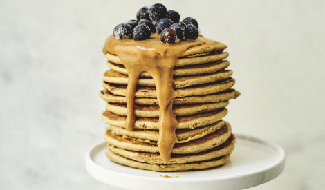

Sastāvdaļas
- 2 glāze/s miltu
- 3 olas
- 1/2 tējk. sāls
- 3 glāze/s piena var aizstāt ar kefīru
- 2 ēd. k. cukura
Pagatavošana
- Diezgan lielā traukā sakuļ olas ar sāli un cukuru, ielej 1 glāzi piena, ieber visus miltus.
- Samaisa un ielej pārējo pienu.
- Atkal ļoti labi samaisa un cep pankūkas uz vidēja lieluma cepešpannas.
- Kad pankūkas ir gatavas var izrotāt tās kā grib - ar saldajām mērcēm, saldējumu, ievarījumu. Ja vēlās sāļās, pilda ar gaļu, sieru vai zivīm.
|
 |
|  |
 |